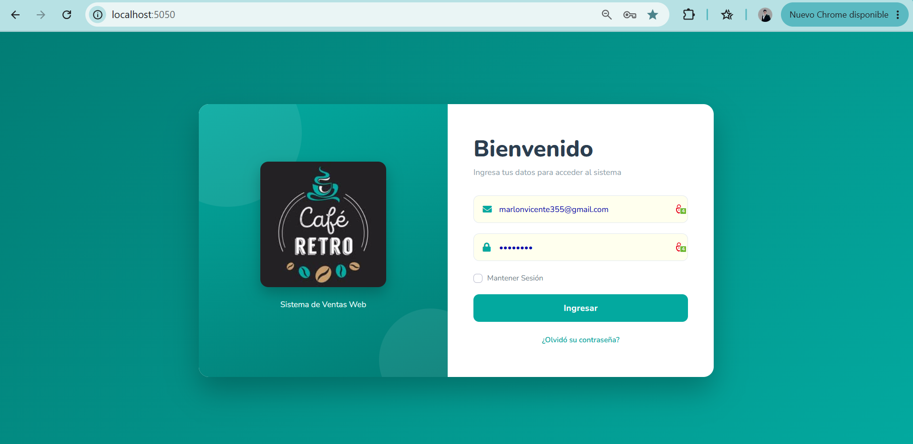
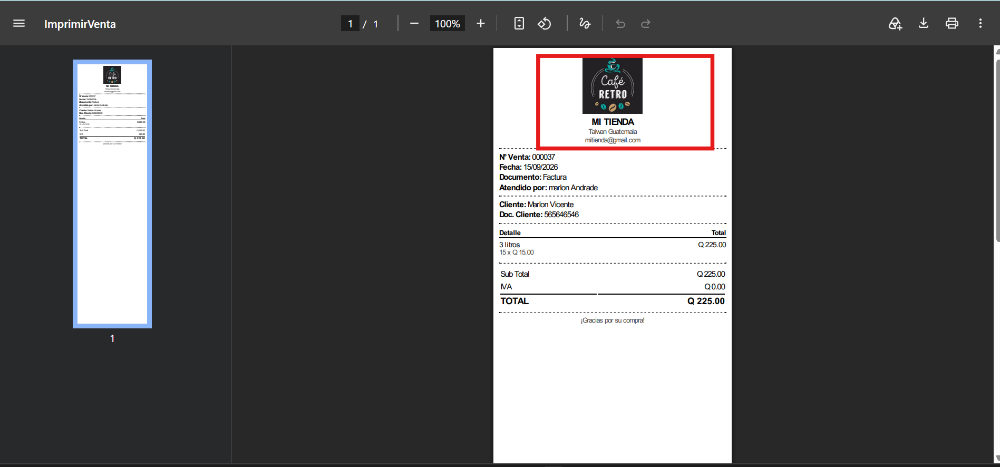
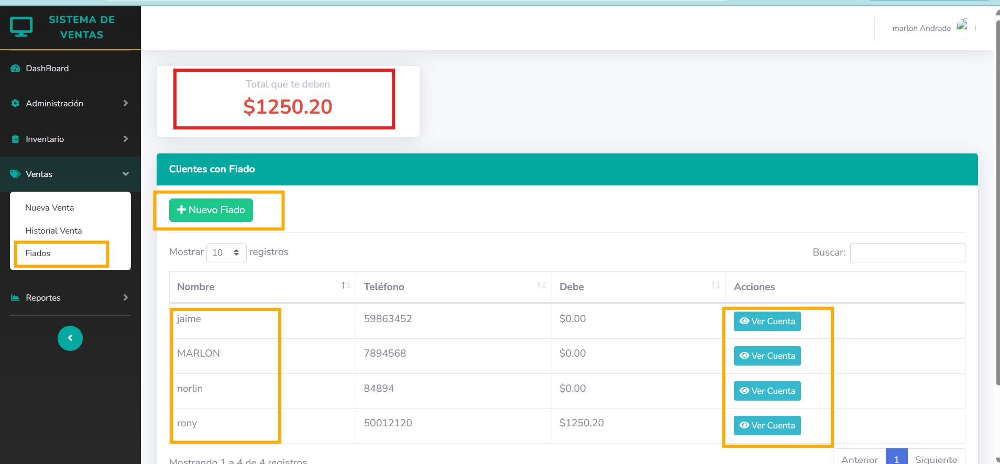
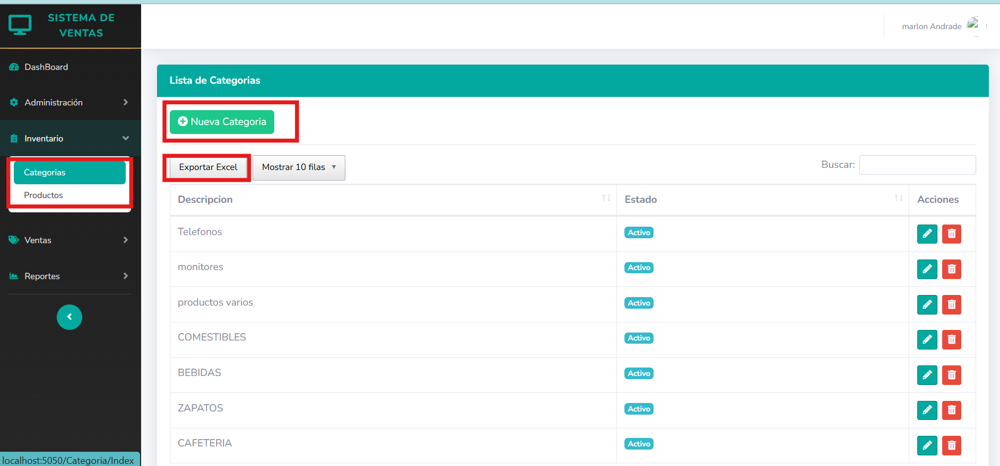

Sales & Credit Management System
N-layer point-of-sale and credit platform · C# / ASP.NET MVC · SQL Server
A fully functional, production-ready sales system built with an N-layer .NET architecture (Application Web, BLL, DAL, Entity, IOC) and a SQL Server backend. It covers the full retail cycle: authentication and role-based access, a live dashboard, point-of-sale checkout, store credit ("fiado") management for trusted customers, inventory control, user administration, and exportable sales reporting.
The solution is organized into separate class libraries for business logic, data access, entities, and dependency injection — keeping the web layer thin and the domain logic testable and reusable.
Architecture & database
The Visual Studio solution splits responsibilities across five projects, and the data layer is backed by a normalized SQL Server schema covering users, roles and menu permissions, product catalog, sales, and credit accounts.


Authentication & dashboard
Access is protected by a login screen, with users assigned one of three roles — Administrator, Supervisor, or Employee — each seeing a menu scoped to their permissions. After login, the dashboard surfaces the numbers that matter at a glance: total sales, total revenue, product count, and category count, plus a 7-day sales trend and a breakdown of best-selling products.


Point of sale & store credit
A cashier can start a new sale, attach a customer by ID/NIT or mark it as a walk-in ("consumidor final"), search the live product catalog, and check out with the subtotal, tax, and total calculated automatically. Every completed sale generates a printable, branded receipt.



For trusted customers, the system supports store credit ("fiado"): products are added to a running account instead of being paid immediately, and the balance owed is tracked per customer and across the whole store.



Inventory & administration
Product categories and the product catalog are managed from the Inventory section, both exportable to Excel for offline review. The Administration section handles user accounts and roles (Administrator, Supervisor, Employee), including password management, plus business ("Negocio") configuration such as logo and contact details used on receipts.


Reporting
The reporting module lets staff filter completed sales by a start and end date and export the full result set to Excel — useful for accounting reconciliation or reviewing sales history outside the app.